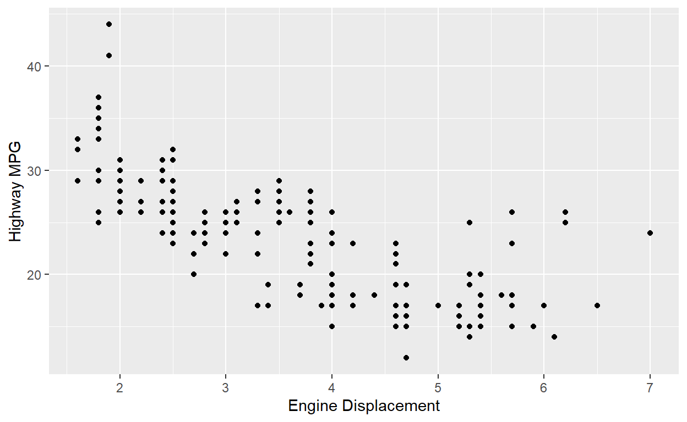
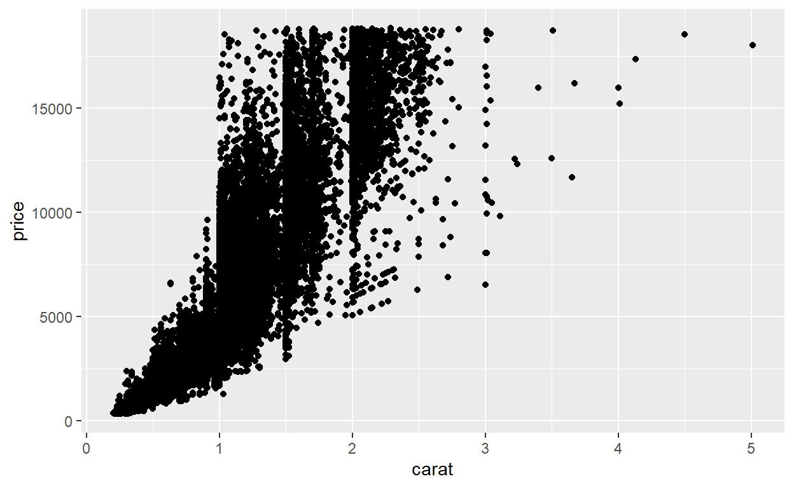

Chapter 55: Overview of Inference
Inferential Analysis allows analysts to draw conclusions about a larger population using a smaller sample. This tutorial will introduce you to some core concepts of inferential statistics including random sampling, uncertainty, and the importance of representative sampling.
Random Sampling & Inference
Let’s start with a simple concept: we often draw conclusions about a large population based on a smaller sample. Imagine we have a dataset mtcars in R that represents all cars in the world.
mtcarsIn reality, we can’t have data about all the cars in the world. We might only have a sample, like the following 5 cars:
sample_mtcars <- mtcars[sample(nrow(mtcars), 5), ]
sample_mtcarsThe goal of inferential analysis is to use this sample to infer characteristics of the larger population.
Uncertainty
Now, let’s introduce the concept of uncertainty. Because we’re basing our conclusions on a sample, there’s always a degree of uncertainty involved. For instance, let’s say we want to estimate the average MPG (Miles per Gallon) for all cars based on our sample data.
mean(sample_mtcars$mpg)## [1] 18.18This is an estimate, but there’s uncertainty around it. We don’t know the true average MPG for all cars, only for our sample.
Random Sampling
The accuracy of inferential statistics heavily depends on how representative our sample is of the population. A representative sample has similar characteristics to the population, allowing us to make accurate inferences.
Create a new sample of 10 cars from the mtcars dataset and calculate the average MPG.
# Your task: Create a new sample of 10 cars from the mtcars dataset and calculate the average MPG.sample_mtcars_10 <- mtcars[sample(nrow(mtcars), 10), ]
mean(sample_mtcars_10$mpg)Summary
In this tutorial, we’ve introduced the basics of inferential statistics. We’ve discussed how it allows us to make conclusions about a larger population based on a smaller sample, introduced the concept of uncertainty in these conclusions, and discussed the importance of representative sampling. In the next lessons, we’ll dive deeper into these concepts, using R to perform inferential analysis on real-world datasets.
Chapter 56: Inference - Linear Regression
Linear regression is one of the most commonly used statistical
methods, allowing us to understand and predict the relationship between
two variables. We’ll use a dataset from the ggplot2 package
to explore this concept.
Key Concepts
Linear regression can be used to describe the relationship between a dependent variable (y-axis) and an independent variable (x-axis). The best-fitting line that describes this relationship minimizes the sum of the squared errors, which means it minimizes the distance of all points from the line.
Positive and Negative Relationships
In linear regression, the direction of the line can indicate the relationship between the variables:
Positive relationship: As the value of the independent variable increases, so does the value of the dependent variable.
Negative relationship: As the value of the independent variable increases, the value of the dependent variable decreases.
Strength of Relationship
The strength of the relationship between two variables in linear regression is determined by how close the data points fall to the best-fitting line. The closer the points are to the line, the stronger the relationship.
Association
One of the main questions in linear regression is: “What is the association between these two variables?” We look for the direction (positive, neutral, or negative) and strength (correlation) of the relationship. The Beta estimate and the standard error from the model help us understand this association.
Association Testing in R
For this tutorial, we’ll be using the mpg dataset from the ggplot2 package. We’ll be trying to understand the relationship between the displacement of a car’s engine (displ) and its fuel efficiency (hwy).
First, let’s visualize the relationship between displ and hwy using a ggplot scatterplot.
ggplot(mpg, aes(displ, hwy)) +
geom_point() +
labs(x = "Engine Displacement", y = "Highway MPG")
Next, fit a linear regression model to these data.
# Your code here.fit <- lm(hwy ~ displ, data = mpg)After we fit our model, we can inspect its summary for the estimates, standard error, and p-value.
# Your code here.summary(fit)The summary() function provides a wealth of information.
It includes the beta estimates (coefficients), standard errors, and
p-values for our model.
The beta estimate (coefficient) for mpg tells us about
the direction and strength of the relationship between miles per gallon
and displacement. If the coefficient is positive, the relationship is
positive, and if the coefficient is negative, the relationship is
negative. The magnitude of the coefficient gives us an idea of the
strength of the relationship.
The standard error informs us about the uncertainty of the beta estimate. The smaller the standard error, the more confident we can be about the estimate.
Finally, the p-value (found in the column Pr[>|t|]) tells us the probability of obtaining the observed data (or data more extreme) if the null hypothesis is true. In this context, the null hypothesis is that there is no relationship between miles per gallon and displacement. A small p-value (typically less than 0.05) suggests that we can reject the null hypothesis.
That’s it! You’ve just created a linear regression model using the
lm() function, and learned how to interpret the output.
Just remember, associations are correlations. They are not causal. The
observation that cars with higher miles per gallon tend to have lower
displacement does not imply that increasing a car’s miles per gallon
will decrease its displacement.
Chapter 57: Inference - Examples
Introduction
In this interactive tutorial, we will explore linear regression as a powerful tool for inference, which forms the foundation of many real-world analyses. We will use a simple case study to illustrate how linear regression can be applied, how to interpret its results, and how to analyze your own data in the future.
Linear regression is extensively used across multiple disciplines such as data science, economics, social science, and natural science. All these fields share a common goal - answering questions about the world using data. In this tutorial, we will focus on a simplified version of a case study conducted by economists, demonstrating how they utilized data to answer their research questions.
Case Study 1: The Effects of Fuel Efficiency on Car Weight
Our case study revolves around the question: “Is there a relationship
between the fuel efficiency (mpg) and weight (wt) of cars?” This kind of
question is often asked when we want to understand the relationship
between two variables. Here, we’re using the mtcars dataset
from the ggplot2 package, which provides data on various
aspects of car design and performance.
# Load the dataset
data(mtcars)Question
The question we aim to answer is: “Does the fuel efficiency of a car relate to its weight?” This is a new twist on the questions asked by many automobile researchers and enthusiasts.
Data
The mtcars dataset contains information about 32 models of cars from the 1973 Motor Trend magazine, including measurements on mpg (miles per gallon) and wt (weight of the car in 1000 lbs).
Analysis
To analyze these data, we will use a simple linear regression model, with mpg as the dependent variable and wt as the independent variable.
# Your code here.fit <- lm(mpg ~ wt, data = mtcars)Results
Once we have our model, we can look at the summary to interpret the results.
# Your code here.summary(fit)This summary provides the estimates (coefficients), standard errors, and p-values for our model.
Let’s interpret these results:
The coefficient for wt tells us about the direction and strength of the relationship between weight and fuel efficiency. If the coefficient is positive, the relationship is positive, and if it’s negative, the relationship is negative.
The standard error informs us about the uncertainty of the coefficient estimate. The smaller the standard error, the more confident we can be about the estimate.
The p-value (found in the column Pr[>|t|]) tells us the probability of obtaining the observed data (or data more extreme) if the null hypothesis is true. In this context, the null hypothesis is that there is no relationship between weight and fuel efficiency. A small p-value (typically less than 0.05) suggests that we can reject the null hypothesis.
Case Study 2: Does Vehicle Size Affect Fuel Efficiency?
Research Question
The question we are interested in is: “Does car size affect fuel efficiency?”
For this, we’ll need information on fuel efficiency and car size from
the mpg dataset.
# Load the ggplot2 package
library(ggplot2)
# View the first few rows of the mpg dataset
head(mpg)Data
In the mpg dataset, displ is a measure of
car size (engine displacement), and hwy represents highway
fuel efficiency (in miles per gallon).
# Extract the variables of interest
data <- mpg[, c("displ", "hwy")]
# View the first few rows of the new dataset
head(data)Analysis
We’ll use linear regression, with displ as the
independent variable and hwy as the dependent variable.
# Fit a linear regression model
model <- lm(hwy ~ displ, data = data)
# Print the model summary
summary(model)##
## Call:
## lm(formula = hwy ~ displ, data = data)
##
## Residuals:
## Min 1Q Median 3Q Max
## -7.1039 -2.1646 -0.2242 2.0589 15.0105
##
## Coefficients:
## Estimate Std. Error t value Pr(>|t|)
## (Intercept) 35.6977 0.7204 49.55 <2e-16 ***
## displ -3.5306 0.1945 -18.15 <2e-16 ***
## ---
## Signif. codes: 0 '***' 0.001 '**' 0.01 '*' 0.05 '.' 0.1 ' ' 1
##
## Residual standard error: 3.836 on 232 degrees of freedom
## Multiple R-squared: 0.5868, Adjusted R-squared: 0.585
## F-statistic: 329.5 on 1 and 232 DF, p-value: < 2.2e-16Results and Interpretation
We can interpret the results from the linear regression output. The
coefficient for displ can be interpreted as the expected
change in hwy for each one-unit increase in
displ, holding all other variables constant.
# Print the coefficient for displ
coef(model)["displ"]## displ
## -3.530589Conclusion
In this tutorial, we’ve used regression analysis to understand the impact of car size on fuel efficiency. This is just the start - remember that additional analyses and experiments would be needed to fully understand the relationship between these variables.
Chapter 58: Inference - Multiple Regression
Confounding
Confounding is when a variable affects both your dependent and independent variables. Consider the example of diamond prices. The size (carat) of a diamond affects its price, but so does the quality of its cut. If we only analyze the price based on the carat size, we might overlook the effect of cut quality, which would be a confounder.
Multiple Linear Regression
Multiple linear regression can help us handle confounders by including them in our model. For example, if we are analyzing the price of a diamond based on its carat size, we might also include the quality of the cut to account for its effect.
Let’s look at an example using the diamonds dataset,
which includes the prices of diamonds along with their carat sizes and
cut qualities.
# Scatter plot of price vs carat
ggplot(diamonds, aes(carat, price)) +
geom_point()
From the scatter plot, it seems that the carat size and price are positively correlated. But, let’s consider the quality of the cut as well.
# Linear regression model with carat and cut as predictors
fit <- lm(price ~ carat + cut, data = diamonds)
summary(fit)##
## Call:
## lm(formula = price ~ carat + cut, data = diamonds)
##
## Residuals:
## Min 1Q Median 3Q Max
## -17540.7 -791.6 -37.6 522.1 12721.4
##
## Coefficients:
## Estimate Std. Error t value Pr(>|t|)
## (Intercept) -2701.38 15.43 -175.061 < 2e-16 ***
## carat 7871.08 13.98 563.040 < 2e-16 ***
## cut.L 1239.80 26.10 47.502 < 2e-16 ***
## cut.Q -528.60 23.13 -22.851 < 2e-16 ***
## cut.C 367.91 20.21 18.201 < 2e-16 ***
## cut^4 74.59 16.24 4.593 4.37e-06 ***
## ---
## Signif. codes: 0 '***' 0.001 '**' 0.01 '*' 0.05 '.' 0.1 ' ' 1
##
## Residual standard error: 1511 on 53934 degrees of freedom
## Multiple R-squared: 0.8565, Adjusted R-squared: 0.8565
## F-statistic: 6.437e+04 on 5 and 53934 DF, p-value: < 2.2e-16Correlation is not Causation
Correlation between two variables does not necessarily imply that one causes the other. For example, while larger diamonds (greater carat sizes) might be correlated with higher prices, this doesn’t mean that making a diamond larger will increase its price. Other factors, like cut quality, might be involved.
Beyond Linear Regression
Linear regression is not the only statistical test available, but it is a fundamental concept that many other tests are based on. For example, a t-test, which tests if the mean of a dataset differs from a specified value, is essentially a linear regression model with only an intercept.
Coding Exercise
Let’s try a coding exercise. Write code to run a t-test to check if the average price of a diamond in the diamonds dataset is different from $4000.
# Replace ___ with appropriate code to run a t-test
t.test(___, mu = 4000)t.test(diamonds$price, mu = 4000)Review
In this tutorial, we revisited the concept of confounding in statistical analysis and learned how to handle confounders using multiple linear regression. We also looked at the concept of correlation and causation, emphasizing that one should be careful not to overstate findings and never to draw causal claims when all we have are associations.
Next, we explored t-tests as a way to check if the average of a dataset differs from an expectation. We did a hands-on coding exercise on this using the diamonds dataset, where we checked if the average price of a diamond is different from a certain amount. We also learned that many statistical tests are simply extensions of linear regression.
Remember, always consider and check for confounding among the variables in your dataset. Also, while correlation can indicate a relationship between two variables, it does not imply causation.
Conclusion
In this interactive tutorial, we’ve learned about multiple linear regression, the concept of confounding, the difference between correlation and causation, and how to run a t-test. We also learned how to handle confounders in our data analysis and how to properly interpret the results of a multiple linear regression model.
Chapter 59: Prediction and Machine Learning
What is Machine Learning?
Machine learning refers to creating models from data patterns that can be used for future predictions. In predictive analysis, we are essentially applying machine learning concepts, using relationships within a dataset to build models for prediction.
Machine Learning Steps
To make predictions for the future using current data, there are four general steps:
- Data Splitting
- Variable Selection
- Model Selection
- Accuracy Assessment
We will go through each of these steps in this tutorial using the mtcars dataset.
data(mtcars)Data Splitting
For machine learning, we need data to train our model. We often use three datasets to build a predictive model: train, tune, and test. Let’s split our mtcars dataset into these three sets.
# We will use the sample function to randomly select rows for the training set.
set.seed(123) # for reproducibility
train_indices <- sample(1:nrow(mtcars), size = 0.7 * nrow(mtcars)) # 70% of data
train_data <- mtcars[train_indices, ]
# The rest of the data will be split equally into tune and test datasets
tune_test_indices <- setdiff(1:nrow(mtcars), train_indices)
tune_indices <- sample(tune_test_indices, size = 0.5 * length(tune_test_indices))
tune_data <- mtcars[tune_indices, ]
test_data <- mtcars[setdiff(tune_test_indices, tune_indices), ]Variable Selection
The variables in the data on hand should be related to the outcome we’re interested in predicting. Here, let’s assume we want to predict mpg (miles per gallon) based on other car features.
For simplicity, let’s select cyl (number of cylinders), hp (horsepower), and wt (weight) as our predictor variables.
predictor_vars <- c("cyl", "hp", "wt")Model Selection
There are many ways to generate prediction models. For this tutorial, let’s use a simple linear regression model to predict mpg based on our predictor variables.
# Building the model using the train_data
model <- lm(mpg ~ cyl + hp + wt, data = train_data)
summary(model)##
## Call:
## lm(formula = mpg ~ cyl + hp + wt, data = train_data)
##
## Residuals:
## Min 1Q Median 3Q Max
## -3.8082 -1.2841 -0.6813 0.9826 5.3706
##
## Coefficients:
## Estimate Std. Error t value Pr(>|t|)
## (Intercept) 40.43936 2.14756 18.830 2.72e-13 ***
## cyl -1.30409 0.68511 -1.903 0.07310 .
## hp -0.01405 0.01435 -0.979 0.34048
## wt -3.15015 0.91001 -3.462 0.00278 **
## ---
## Signif. codes: 0 '***' 0.001 '**' 0.01 '*' 0.05 '.' 0.1 ' ' 1
##
## Residual standard error: 2.699 on 18 degrees of freedom
## Multiple R-squared: 0.8595, Adjusted R-squared: 0.8361
## F-statistic: 36.72 on 3 and 18 DF, p-value: 7.008e-08Now, we have our predictive model. Let’s use it to make predictions on our tune dataset and assess its accuracy.
# Next, we apply our model to the tune dataset
tune_data$predicted_weight <- predict(model, newdata = tune_data)
# We can calculate the root mean square error (RMSE) to assess the model's accuracy
rmse <- sqrt(mean((tune_data$weight - tune_data$predicted_weight)^2))
rmse## [1] NaNExercise 1. Predictive Modeling with Linear Regression
In the above steps, we have built a predictive model using linear regression and assessed its accuracy on the tune dataset. Now, it’s your turn to apply these steps to a new variable.
In this exercise, you are asked to build a linear regression model to
predict the drat variable (rear axle ratio) based on the
hp variable (gross horsepower). Apply your model to the
tune dataset and calculate the RMSE to evaluate its accuracy.
# Build the model
# Apply the model to the tune dataset
# Calculate RMSE# Build the model
model_ex1 <- lm(drat ~ hp, data = train_data)
# Apply the model to the tune dataset
tune_data$predicted_drat <- predict(model_ex1, newdata = tune_data)
# Calculate RMSE
rmse_ex1 <- sqrt(mean((tune_data$drat - tune_data$predicted_drat)^2))
rmse_ex1Model Selection: Classification and Regression Trees (CART)
hen it comes to predicting categorical outcomes, Classification and Regression Trees (CART) is a handy tool. A CART model generates a decision tree based on the patterns in the training data, which can then be used to predict future outcomes.
Let’s try to predict the am variable (transmission type:
0 = automatic, 1 = manual) in the mtcars dataset using a
CART model. We’ll use the rpart package to build our
model.
# Install and load the rpart package
if (!require(rpart)) {
install.packages('rpart')
}## Loading required package: rpartlibrary(rpart)
# Build the CART model
cart_model <- rpart(am ~ hp + wt, data = train_data, method = "class")
# Let's visualize our decision tree
if (!require(rpart.plot)) {
install.packages('rpart.plot')
}## Loading required package: rpart.plotlibrary(rpart.plot)
rpart.plot(cart_model, extra = 1)
Now, let’s apply our CART model to the tune dataset and assess its accuracy.
# Apply the CART model to the tune dataset
tune_data$predicted_am <- predict(cart_model, newdata = tune_data, type = "class")
# Calculate accuracy
accuracy <- sum(tune_data$am == tune_data$predicted_am) / nrow(tune_data)
accuracy## [1] 1Exercise 2. Predictive Modeling with CART
Now, it’s your turn to build a CART model. In this exercise, you are
asked to predict the vs variable (engine shape: 0 =
V-shaped, 1 = straight) based on the hpand wt
variables. Apply your model to the tune dataset and calculate the
accuracy.
# Build the CART model
# Apply the CART model to the tune dataset
# Calculate accuracy# Build the CART model
cart_model_ex2 <- rpart(vs ~ hp + wt, data = train_data, method = "class")
# Apply the CART model to the tune dataset
tune_data$predicted_vs <- predict(cart_model_ex2, newdata = tune_data, type = "class")
# Calculate accuracy
accuracy_ex2 <- sum(tune_data$vs == tune_data$predicted_vs) / nrow(tune_data)
accuracy_ex2Model Selection: Random Forest
Random Forest is an ensemble learning method that operates by constructing a multitude of decision trees at training time and outputting the class that is the mode of the classes (classification) or mean prediction (regression) of the individual trees. It is a very powerful and versatile method, capable of handling both regression and classification tasks.
Let’s try to predict the am variable in the
mtcars dataset using a Random Forest model. We’ll use the
randomForest package to build our model.
# Install and load the randomForest package
if (!require(randomForest)) {
install.packages('randomForest')
}## Loading required package: randomForest## randomForest 4.7-1.1## Type rfNews() to see new features/changes/bug fixes.##
## Attaching package: 'randomForest'## The following object is masked from 'package:dplyr':
##
## combine## The following object is masked from 'package:ggplot2':
##
## marginlibrary(randomForest)
# Build the Random Forest model
rf_model <- randomForest(am ~ hp + wt, data = train_data)## Warning in randomForest.default(m, y, ...): The response has five or fewer
## unique values. Are you sure you want to do regression?# Apply the Random Forest model to the tune dataset
tune_data$predicted_am_rf <- predict(rf_model, newdata = tune_data)
# Calculate accuracy
accuracy_rf <- sum(tune_data$am == tune_data$predicted_am_rf) / nrow(tune_data)
accuracy_rf## [1] 0Exercise 3. Predictive Modeling with Random Forest
Now, it’s your turn to build a Random Forest model. In this exercise,
you are asked to predict the vs variable based on the
hp and wt variables. Apply your model to the
tune dataset and calculate the accuracy.
# Your code here# Build the Random Forest model
rf_model_ex3 <- randomForest(vs ~ hp + wt, data = train_data)
# Apply the Random Forest model to the tune dataset
tune_data$predicted_vs_rf <- predict(rf_model_ex3, newdata = tune_data)
# Calculate accuracy
accuracy_ex3 <- sum(tune_data$vs == tune_data$predicted_vs_rf) / nrow(tune_data)
accuracy_ex3You can see that the accuracy varies depending on the model. Different models may perform better or worse depending on the specific characteristics of the data and the task.
Model Accuracy
Predictive analysis is a challenging task. Hence, it’s crucial to evaluate the accuracy of your model meticulously.
Error Rates
To assess our predictive models’ performance, we calculate error rates. The two common ways are:
- RMSE (Root-mean-square Error)
- Accuracy
To assess error, you need the truth (the actual value) in addition to the predicted value. Thus, RMSE and Accuracy are assessed in the training and tuning data.
RMSE
The root-mean-square error (RMSE) is a measure used to assess prediction error for continuous variables. We want to minimize error in prediction. Thus, a small RMSE is better than a large RMSE.
Accuracy
To assess error in the prediction of categorical variables, accuracy is frequently used. Accuracy determines the number of predictions that match their actual values.
Machine Learning Examples
Now let’s walk through two examples. One for prediction of a continuous variable using linear regression and a second for prediction of a categorical value using a CART.
Continuous Variable Prediction: Linear Regression
For this example, we will use the mpg dataset from the
ggplot2 package. We will attempt to use the data in the mpg
dataset to predict displ.
Data Splitting
We will split the dataset into a training set and a tuning set. To do this, we will use the caret package and use the createDataPartition() function to split the dataset.
# Set the seed for reproducibility
set.seed(123)
# Use the createDataPartition function to split the dataset
trainIndex <- createDataPartition(mpg$displ, p = .7, list = FALSE, times = 1)
# Split into training and tuning set
mpg_train <- mpg %>% slice(trainIndex)## Warning: Slicing with a 1-column matrix was deprecated in dplyr 1.1.0.
## This warning is displayed once every 8 hours.
## Call `lifecycle::last_lifecycle_warnings()` to see where this warning was
## generated.mpg_tune <- mpg %>% slice(-trainIndex)
# View the structure of the training set and the tuning set
str(mpg_train)## tibble [166 × 11] (S3: tbl_df/tbl/data.frame)
## $ manufacturer: chr [1:166] "audi" "audi" "audi" "audi" ...
## $ model : chr [1:166] "a4" "a4" "a4" "a4 quattro" ...
## $ displ : num [1:166] 1.8 2 3.1 1.8 1.8 2 2 2.8 2.8 3.1 ...
## $ year : int [1:166] 1999 2008 2008 1999 1999 2008 2008 1999 1999 2008 ...
## $ cyl : int [1:166] 4 4 6 4 4 4 4 6 6 6 ...
## $ trans : chr [1:166] "manual(m5)" "manual(m6)" "auto(av)" "manual(m5)" ...
## $ drv : chr [1:166] "f" "f" "f" "4" ...
## $ cty : int [1:166] 21 20 18 18 16 20 19 15 17 17 ...
## $ hwy : int [1:166] 29 31 27 26 25 28 27 25 25 25 ...
## $ fl : chr [1:166] "p" "p" "p" "p" ...
## $ class : chr [1:166] "compact" "compact" "compact" "compact" ...str(mpg_tune)## tibble [68 × 11] (S3: tbl_df/tbl/data.frame)
## $ manufacturer: chr [1:68] "audi" "audi" "audi" "audi" ...
## $ model : chr [1:68] "a4" "a4" "a4" "a4" ...
## $ displ : num [1:68] 1.8 2 2.8 2.8 3.1 4.2 6 5.3 3.1 3.5 ...
## $ year : int [1:68] 1999 2008 1999 1999 2008 2008 2008 2008 1999 2008 ...
## $ cyl : int [1:68] 4 4 6 6 6 8 8 8 6 6 ...
## $ trans : chr [1:68] "auto(l5)" "auto(av)" "auto(l5)" "manual(m5)" ...
## $ drv : chr [1:68] "f" "f" "f" "f" ...
## $ cty : int [1:68] 18 21 16 18 17 16 12 11 18 18 ...
## $ hwy : int [1:68] 29 30 26 26 25 23 17 14 26 29 ...
## $ fl : chr [1:68] "p" "p" "p" "p" ...
## $ class : chr [1:68] "compact" "compact" "compact" "compact" ...Next, we’ll move onto predicting a categorical variable.
# Categorical Variable Prediction: CART
# We will use the `species` variable from the `iris` dataset for this example
data(iris)
# Split the data into training and tuning sets
set.seed(123)
trainIndex <- createDataPartition(iris$Species, p = .7, list = FALSE, times = 1)
iris_train <- iris %>% slice(trainIndex)
iris_tune <- iris %>% slice(-trainIndex)
# Train the CART model
fit.cart <- train(Species~., data = iris_train, method = "rpart", metric = "Accuracy")
# Generate predictions
predictions_cart <- predict(fit.cart, iris_tune)
# Compare the predicted and actual values
table(iris_tune$Species, predictions_cart)## predictions_cart
## setosa versicolor virginica
## setosa 15 0 0
## versicolor 0 14 1
## virginica 0 2 13# Create a quiz question using `learnr`'s `quiz` function
quiz(
question("What does RMSE stand for in the context of machine learning?",
answer("Root-mean-square Error", correct = TRUE),
answer("Relative Mean Score Error"),
answer("Rooted Mean Square Error"),
answer("Relative Mean Square Error")
),
question("What does the `train` function in the `caret` package do?",
answer("It trains a machine learning model on provided data", correct = TRUE),
answer("It splits data into training and testing sets"),
answer("It generates predictions from a trained model"),
answer("It visualizes the performance of a trained model")
),
question("What is the purpose of the `createDataPartition` function?",
answer("To split data into training and testing sets", correct = TRUE),
answer("To train a machine learning model on provided data"),
answer("To generate predictions from a trained model"),
answer("To visualize the performance of a trained model")
)
)